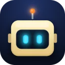

Robot Chess
Real chess with animated robot pieces and a coach that explains your moves. Play against the bot or share a board with a friend.
Learn, practise, or play together
Open Robot Chess and choose how you want to play. No download or account is needed.
- Start with a short interactive tutorial: 22 steps in six chapters.
- Choose Free play, Timed, Ranked, or Coach mode against a Stockfish bot, with eight difficulty levels.
- Let the coach explain illegal moves, rate your play, and show tactics such as forks, pins, and missed captures.
- Play with a friend on the same device. The board can turn after each move, and a clock and coach are optional.
- Pick Meadow, Twilight garden, or Galaxy, and watch each kind of robot move and capture in its own way.
Saved games and offline play
Your settings and game in progress are saved in your browser after each move. If the page reloads, choose Continue your game from the home menu. Leaving a game with the Home button gives it up.
After the first visit, the game keeps its files on your device for offline play. You can also install it from a supported browser. On iPhone and iPad, the Install button explains how to add it to the Home Screen.
Known limits
Phone and tablet layouts, installation, and offline play have been checked in a desktop browser, but still need testing on real mobile devices. Bot levels and coach feedback have not yet been tuned with children.
In the angled view, a tall robot can cover the square behind it. Drag the piece to that square or switch to Top view.